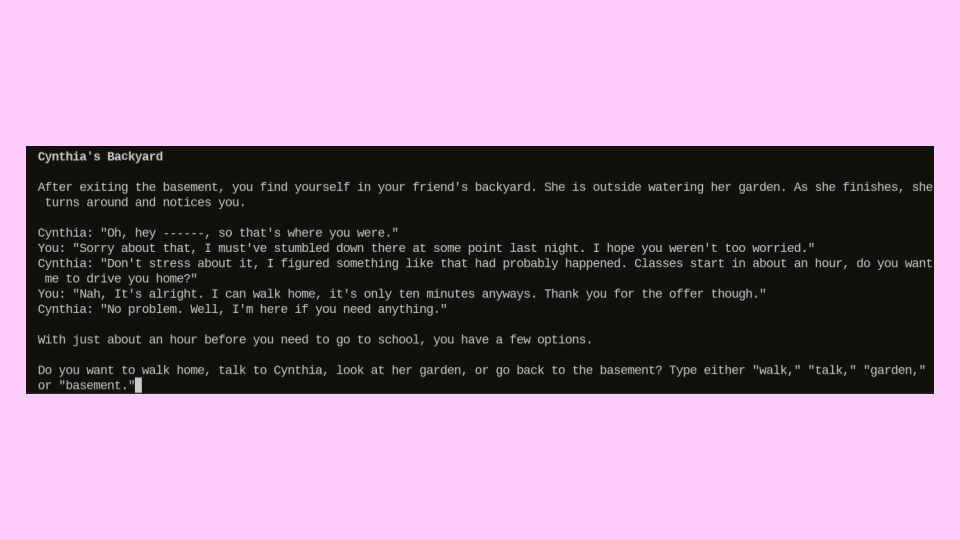
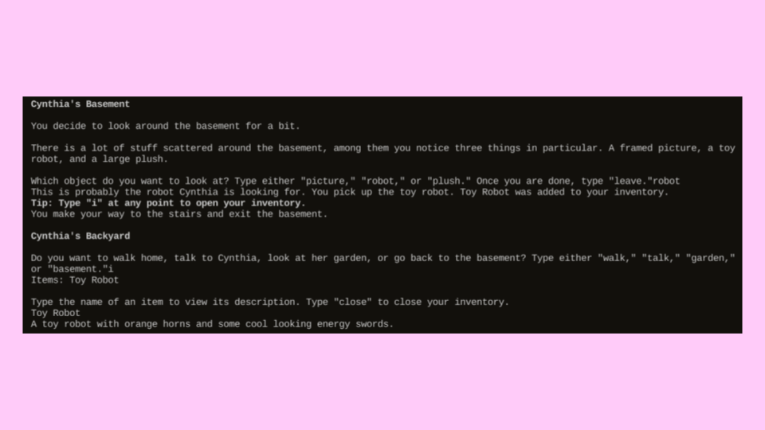
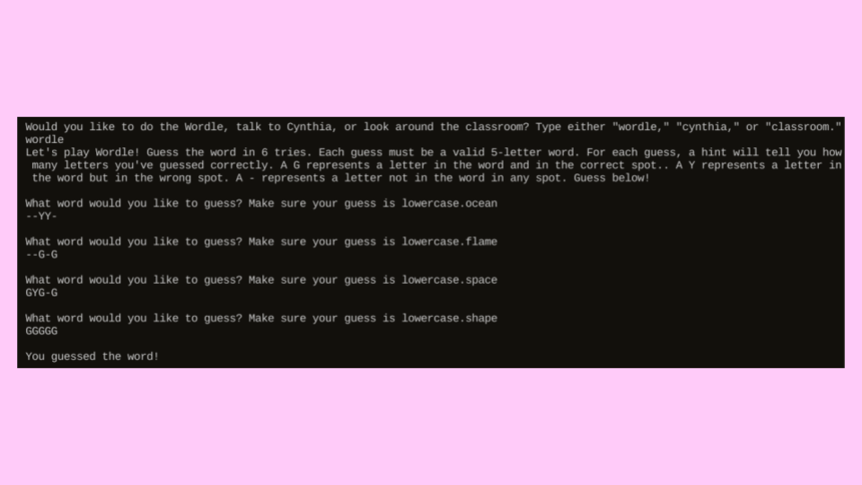

C--seq----es
GitHub repository
The Assignment
In August of 2024, I was tasked with developing an adventure game on GitHub using Python that could be played entirely in the terminal for my web development class. We were given the choice to work in groups or by ourselves, and I chose to work alone. The game needed NPCs that had dialogue, two items with different functionalities, a puzzle, and we were required to use classes in our code. It took me a while to come up with an idea, but I eventually decided to make mine a story focused game since I enjoy writing stories and characters.
Initial Ideas
First, I had to come up with what I actually wanted the story to be. After half a day or so of brainstorming, I came up with the idea of someone who made a mistake trying to learn and improve from it. The more specific elements of the plot, such as the setting, came to me on the fly as I was writing. I decided to make the main character a young college student with a small but close friend group. Now that I had a general idea of what I wanted the story to be, it was time to start working.
Development
I created the GitHub reposity and opened a workspace on GitPod. The first thing I did was set up the foundations. I made four python files, one for the player and NPCs, one for items, one for the puzzle, and one as the main file for everything else. The characters file contains two classes, one for the protagonist and one for NPCs. The dialogue for each character is stored in a dictonary, and is printed to the terminal when needed using a function that takes in a key word. As for items, I also used a class to make them. Each item has a name and description attatched to it. Finally, for the puzzle, I decided to use a Wordle game we had made in class the previous week. After all of that, I decided that I would work on the main content of each scene in order, and then later go back and add some extra content. Both the introduction and basement scenes were relatively quick due to their short length and low amounts of dialogue. The backyard took the longest, due to having more dialogue choices. English class also took a little while because there were a few bugs that needed fixing when I implemented the Wordle puzzle. With the main content finished, I went back and added a side quest to the backyard, two items, an inventory system, new dialogue to English class that is unlocked by completing the side quest, and a secret easter egg that can be found by talking to one of the NPCs. The story is currently unfinished, and I eventually plan on coming back to it.
Features

C--seq----es has multiple NPC characters and different scenes. Each scene has multiple choices you can make. Some choices progress the story, while others give flavor text or a deeper insight into the characters and their relationships. Each of the characters in the game is based on somebody from my personal life, and I found that it made it a lot easier to write dialogue for them.

As I am writing this, C--seq----es currently has two items. Each item has a name, description, and a unique functionality. The first item is the Toy Robot. It can be picked up in the basement after accepting the side quest in the backyard, and talking to that NPC again will give the item to her and complete the quest. For completing her quest, she gives you another item, the Flower Pinwheel. This item changes some of the dialogue in the English class scene, and can be used to skip the Wordle puzzle. There is also an inventory system, which can be accessed at any time by typing 'i' into the terminal. The inventory displays all the items you have, and allows you to read their descriptions.

As mentioned previously, for the puzzle I decided to use a Wordle game I had made previously. Instead of using colors to display which letters are correct and incorrect, this one uses G, Y, and -. G represents a letter in the correct space, Y represents a letter that is in the word but in the wrong space, and - represents a letter that is not in the word at all. After adding some more words and making a few adjustments to the code, it was ready to be implemented. I decided to place the puzzle in the English class scene because I felt like it made the most sense to go in there.